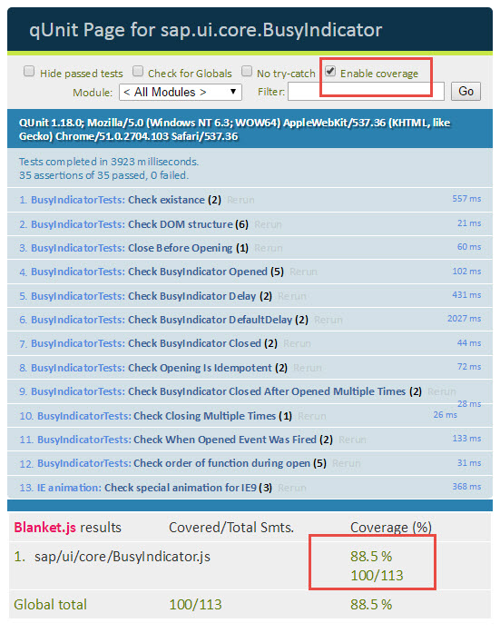

Code Coverage Measurement
You can measure the code coverage for your test inside the Control.qunit.html page either via HTML or JavaScript code using Blanket.js.
HTML
With the following line you enable Blanket.js to measure the
code
coverage:
<script type="text/javascript" src="../../../../../resources/sap/ui/qunit/qunit-coverage.js"></script>With this argument, all files that are executed during the test run are added to the result.
If you want to limit the test run, you can use the following code:
-
Limit test to a single file:
<script type="text/javascript" src="../../../../../resources/sap/ui/qunit/qunit-coverage.js" data-sap-ui-cover-only="sap/ui/core/Popup.js" ></script> -
Limit test to multiple files (provide an array with comma-separated sources that should occur in the result):
<script type="text/javascript" src="../../../../../resources/sap/ui/qunit/qunit-coverage.js" data-sap-ui-cover-only="[sap/ui/core/Popup.js, sap/ui/core/EventProvider]" ></script> -
Limit test to a specific library:
<script type="text/javascript" src="../../../../../resources/sap/ui/qunit/qunit-coverage.js" data-sap-ui-cover-only="sap/ui/core/" ></script> -
Exclude specific objects:
<script type="text/javascript" src="../../../../../resources/sap/ui/qunit/qunit-coverage.js" data-sap-ui-cover-never="sap/m/" ></script>
JavaScript
Inside your test page, you can add these lines before running the
tests:
sap.ui.require(["sap/ui/qunit/qunit-coverage"], function(/*coverage*/){
// code
});If you want to limit the test run, you can use the following code:
-
Limit test to a single file:
if (window.blanket) { blanket.options("sap-ui-cover-only", "sap/ui/core/Popup.js"); } -
Limit test to multiple files (provide an array with comma-separated sources that should occur in the result):
if (window.blanket) { blanket.options("sap-ui-cover-only", "[sap/ui/core/Popup.js, sap/ui/core/EventProvide]"); } -
Limit test to a specific library:
if (window.blanket) { blanket.options("sap-ui-cover-only", "sap/ui/core/"); } -
Exclude specific objects:
if (window.blanket) { blanket.options("sap-ui-cover-never", "sap/ui/example/thirdparty/"); }
Results
To view the results of the measurement, select the Enable coverage checkbox on the test page. This will trigger a new test run.
In this example the coverage is limited to one specific file - the only one that is important for this test.

Related Information